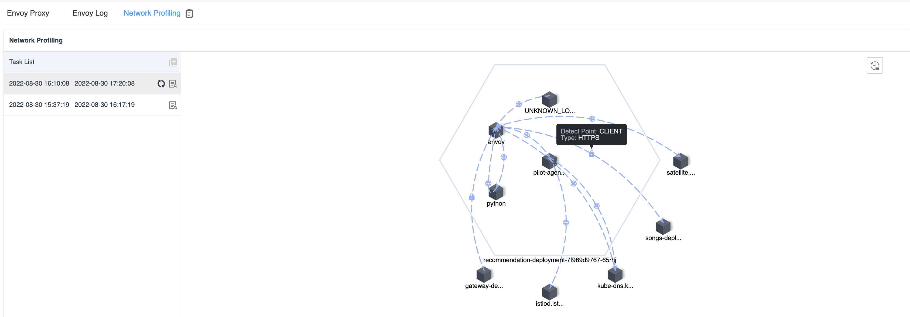

Release Apache SkyWalking APM 9.2.0
Release Apache SkyWalking 9.2.0
SkyWalking 9.2.0 is released. Go to downloads page to find release tars.
eBPF Network Profiling for K8s Pod
Event and Metrics Association

MySQL Server Monitoring

PostgreSQL Server Monitoring

Project
- [Critical] Fix a low performance issue of metrics persistent in the ElasticSearch storage implementation. One single
metric could have to wait for an unnecessary 7~10s(System Env Variable
SW_STORAGE_ES_FLUSH_INTERVAL) since 8.8.0 - 9.1.0 releases. - Upgrade Armeria to 1.16.0, Kubernetes Java client to 15.0.1.
OAP Server
- Add more entities for Zipkin to improve performance.
- ElasticSearch: scroll id should be updated when scrolling as it may change.
- Mesh: fix only last rule works when multiple rules are defined in metadata-service-mapping.yaml.
- Support sending alarm messages to PagerDuty.
- Support Zipkin kafka collector.
- Add
VIRTUALdetect type to Process for Network Profiling. - Add component ID(128) for Java Hutool plugin.
- Add Zipkin query exception handler, response error message for illegal arguments.
- Fix a NullPointerException in the endpoint analysis, which would cause missing MQ-related
LocalSpanin the trace. - Add
forEach,processRelationfunction to MAL expression. - Add
expPrefix,initExpin MAL config. - Add component ID(7015) for Python Bottle plugin.
- Remove legacy OAL
percentilefunctions,p99,p95,p90,p75,p50func(s). - Revert #8066. Keep all metrics persistent even it is default value.
- Skip loading UI templates if folder is empty or doesn’t exist.
- Optimize ElasticSearch query performance by using
_mGetand physical index name rather than alias in these scenarios, (a) Metrics aggregation (b) Zipkin query (c) Metrics query (d) Log query - Support the
NETWORKtype of eBPF Profiling task. - Support
sumHistograminMAL. - [Breaking Change] Make the eBPF Profiling task support to the service instance level,
index/table
ebpf_profiling_taskis required to be re-created when bump up from previous releases. - Fix race condition in Banyandb storage
- Support
SUM_PER_MINdownsampling inMAL. - Support
sumHistogramPercentileinMAL. - Add
VIRTUAL_CACHEto Layer, to fix conjectured Redis server, which icon can’t show on the topology. - [Breaking Change] Elasticsearch storage merge all metrics/meter and records(without super datasets) indices into one
physical index template
metrics-allandrecords-allon the default setting. Provide system environment variable(SW_STORAGE_ES_LOGIC_SHARDING) to shard metrics/meter indices into multi-physical indices as the previous versions(one index template per metric/meter aggregation function). In the current one index mode, users still could choose to adjust ElasticSearch’s shard number(SW_STORAGE_ES_INDEX_SHARDS_NUMBER) to scale out. More details please refer to New ElasticSearch storage option explanation in 9.2.0 and backend-storage.md - [Breaking Change] Index/table
ebpf_profiling_scheduleadded a new columnebpf_profiling_schedule_id, the H2/Mysql/Tidb/Postgres storage users are required to re-created it when bump up from previous releases. - Fix Zipkin trace query the max size of spans.
- Add
tlsandhttpscomponent IDs for Network Profiling. - Support Elasticsearch column alias for the compatibility between storage logicSharding model and no-logicSharding model.
- Support MySQL monitoring.
- Support PostgreSQL monitoring.
- Fix query services by serviceId error when Elasticsearch storage
SW_STORAGE_ES_QUERY_MAX_SIZE> 10000. - Support sending alarm messages to Discord.
- Fix query history process data failure.
- Optimize TTL mechanism for Elasticsearch storage, skip executed indices in one TTL rotation.
- Add Kubernetes support module to share codes between modules and reduce calls to Kubernetes API server.
- Bump up Kubernetes Java client to fix cve.
- Adapt OpenTelemetry native metrics protocol.
- [Breaking Change] rename configuration folder from
otel-oc-rulestootel-rules. - [Breaking Change] rename configuration field from
enabledOcRulestoenabledOtelRulesand environment variable name fromSW_OTEL_RECEIVER_ENABLED_OC_RULEStoSW_OTEL_RECEIVER_ENABLED_OTEL_RULES. - [Breaking Change] Fix JDBC TTL to delete additional tables data.
SQL Database requires removing
segment,segment_tag,logs,logs_tag,alarms,alarms_tag,zipkin_span,zipkin_querybefore OAP starts. - SQL Database: add
@SQLDatabase.ExtraColumn4AdditionalEntityto support add an extra column from parent to an additional table. - Add component ID(131) for Java Micronaut plugin
- Add component ID(132) for Nats java client plugin
UI
- Fix query conditions for the browser logs.
- Implement a URL parameter to activate tab index.
- Fix clear interval fail when switch autoRefresh to off.
- Optimize log tables.
- Fix log detail pop-up page doesn’t work.
- Optimize table widget to hide the whole metric column when no metric is set.
- Implement the Event widget. Remove
eventmenu. - Fix span detail text overlap.
- Add Python Bottle Plugin Logo.
- Implement an association between widgets(line, bar, area graphs) with time.
- Fix tag dropdown style.
- Hide the copy button when db.statement is empty.
- Fix legend metrics for topology.
- Dashboard: Add metrics association.
- Dashboard: Fix
FaaS-Rootdocument link and topology service relation dashboard link. - Dashboard: Fix
Mesh-InstancemetricThroughput. - Dashboard: Fix
Mesh-Service-RelationmetricThroughputandProxy Sidecar Internal Latency in Nanoseconds (Client Response). - Dashboard: Fix
Mesh-Instance-RelationmetricThroughput. - Enhance associations for the Event widget.
- Add event widgets in dashboard where applicable.
- Fix dashboard list search box not work.
- Fix short time range.
- Fix event widget incompatibility in Safari.
- Refactor the tags component to support searching for tag keys and values.
- Implement the log widget and the trace widget associate with each other, remove log tables on the trace widget.
- Add log widget to general service root.
- Associate the event widget with the trace and log widget.
- Add the MySQL layer and update layer routers.
- Fix query order for trace list.
- Add a calculation to convert seconds to days. q* Add Spring Sleuth dashboard to general service instance.
- Support the process dashboard and create the time range text widget.
- Fix picking calendar with a wrong time range and setting a unique value for dashboard grid key.
- Add PostgreSQL to Database sub-menu.
- Implement the network profiling widget.
- Add Micronaut icon for Java plugin.
- Add Nats icon for Java plugin.
- Bump moment and @vue/cli-plugin-e2e-cypress.
- Add Network Profiling for Service Mesh DP instance and K8s pod panels.
Documentation
- Fix invalid links in release docs.
- Clean up doc about event metrics.
- Add a table for metric calculations in the UI doc.
- Add an explanation for alerting kernel and its in-memory window mechanism.
- Add more docs for widget details.
- Update alarm doc introduce configuration property key
- Fix dependency license’s NOTICE and binary jar included issues in the source release.
- Add eBPF CPU profiling doc.
All issues and pull requests are here